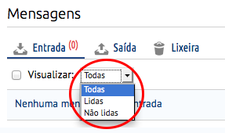
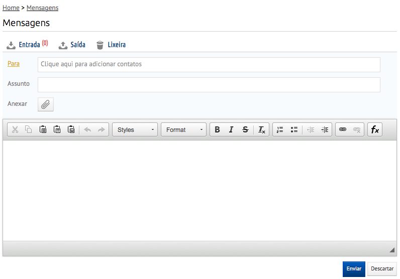
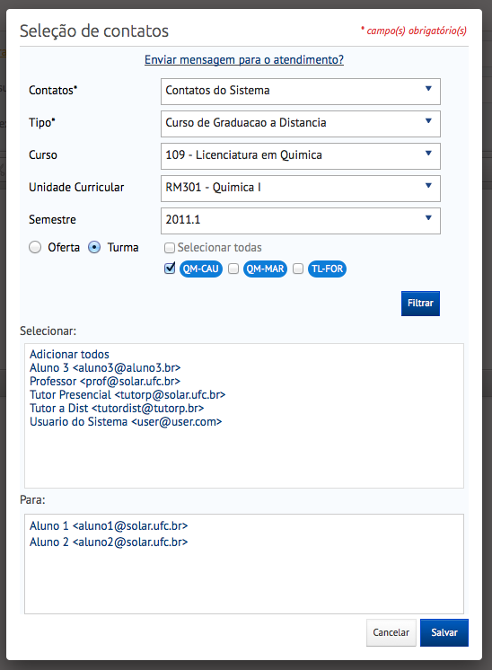

O link de acesso à página de Mensagens encontra-se no menu de navegação, localizado na lateral esquerda da página. Este tutorial apresentará as seguintes funcionalidades:
Nesta página constam todas as mensagens recebidas pelo usuário.
Tela inicial de Mensagens
No link Visualizar podemos filtrar as mensagens entre três tipo: Todas, Lidas, Não Lidas.
Para verificar as mensagens enviadas, basta clicar em Enviadas na barra de mensagens.
Para verificar as uma mensagens excluidas basta clicar em Lixeira na barra de mensagens. Caso seja necessário recuperar uma mensagem, selecione a mensagem e clique no botão (Restaurar Mensagem).
Para criar uma nova mensagem clique no botão (Nova Mensagem), onde será apresentado um editor para você compor seu texto.
Ao clicar no campo Para lhe será apresentado uma janela para selecionar a quais contatos deseja enviar a mensagem, onde primeiramente você de qual Unidade Curricular eles pertencem. Para escolher para quem se deseja enviar a mensagem, basta clicar no nome do usuário. O nome escolhido irá para caixa inferior.
Para enviar a mensagem basta clicar no botão Enviar, da mesma forma podemos cancelar o processo clicando no botão Descartar.
{kind=link}
{kind=link}